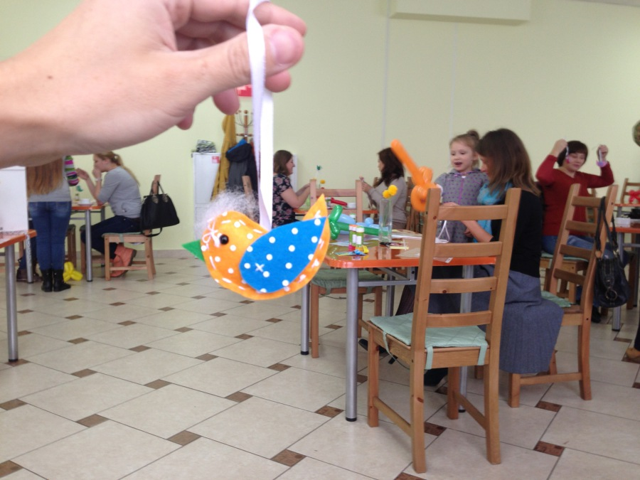

В начале сентября я решил ежедневно подводить небольшие итоги каждого дня, чтобы в конце месяца убедиться, что месяц был прожит не зря. Или зря.
Пришло время собирать камни, и буквы.
Итак, в сентябре 2014 года я:
— добавил возможность онлайн-пожертвований на сайт благотворительного фонда «Счастье детям». Там же сделал виджет, вставив который на свой сайт вы можете добавить возможность пожертвований и себе. Виджет пока стоит на моём keminfo.ru и на ya-rayon.ru Натальи Надымовой
— нашёл в интернете книгу Тренировка заключённых. В книге пишут, что качалка фуфло, а заниматься нужно с собственным весом. Стали с Максимом Мжельским чаще подтягиваться и реже жать.
— написал заявление о переносе номера с Мегафона на Билайн. Это был скорее эксперимент ради эксперимента, правда Мегафон в последнее время стал очень сильно огорчать. Интернет стал отсутствовать везде.
— начал читать книги
— получил карту, привязанную к Яндекс.Деньгам, её, оказывается, выпускает банк Тинькова. После таких новостей нет никакой радости от этой карты
— купил ещё одну капсульную кофеварку Dolce Gusto, эта более красивая, менее красивую отдал отцу
— получил дисконтную карту Калинкино. Порядка 10% теперь начисляется бонусами на эту карту. Правда магазин Калинкино на бульваре за сентябрь успел сгореть
— тестируем с семьёй режим ужинов вне дома, об этом напишу ещё подробнее
— после перерыва в августе, оплатил 8100 за 20 уроков английского себе и сыну, вернулись оба к его изучению
— первый раз в жизни продал доменное имя, за 5000 рублей
— получил в Промсвязьбанке вторую карту ALL INCLUSIVE, напишу об этом подробнее на ближайшей неделе
— кончились деньги, заправился на Газпромнефти на бонусы. Бак бензина мне обходится в 2 с небольшим тысячи рублей, мелочь, а приятно. Делаю это примерно раз в квартал
— копал с отцом картошку
— установил на телефон Шагомер, теперь вижу точно, что почти не хожу пешком, стараюсь исправлять ситуацию
— сшил птичку на мастер-классе, который проводил фонд «Счастье детям». Птичка ушла с аукциона аж за 300 рублей Вадиму Хващевскому. Мы постоянно пробуем в фонде разные способы взаимодействия. Вадим в этот раз нам очень сильно помог, не только покупкой птички, конечно.

— купил карту Продлюкса за 2000. Карта даёт скидку 10% в общепите Продлюкса
— пробежался за детьми, которые обкидывали желудями машины на бульваре Строителей, не догнал
— посмотрел «Люси», не впечатлило ничем. Йоханссон, конечно, милая, но без неё в фильме вообще не на что было бы смотреть
— сделал шорткоды для вордпресса для добавления карт в посты. Раньше карты вставлялись фреймами с гугл.мэпс, а теперь можно напрямую отрисовавать треки из файлов в посте. Как в постах про Грузию
— поболел муконазальным секретом пару дней
— помыл машину перед дождём. Вообще, чтобы не переживать по поводу мойки и дождя, нужно просто мыть машину каждый день. Наш сосед так делает, но у него больше времени и денег.
— отметили с учредителями фонда «Счастье детям», ему исполнился в сентябре 1 год. В жизни есть мало людей, общаясь с которыми, заряжаешься энергией, я прямо как Люси чувствую это. В нашем фонде таких людей несколько. Очень приятно.